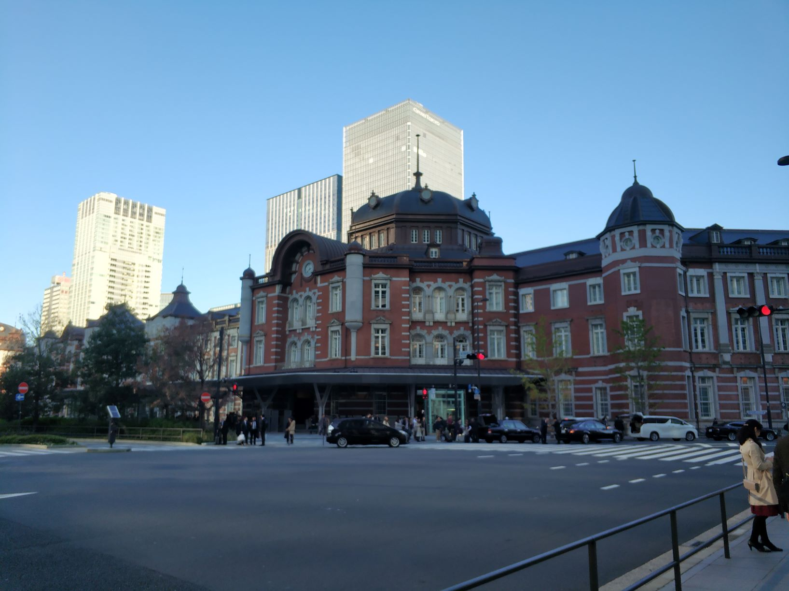
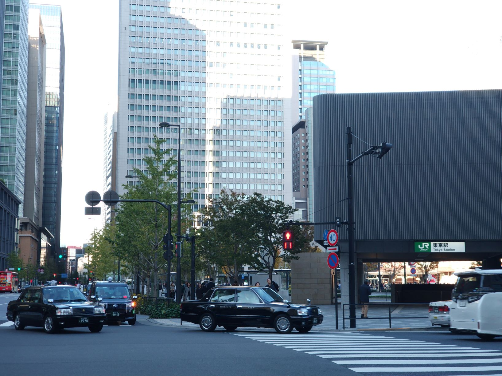

This is Japan impressions page
 
Japan is an amazing country, with a logt of diliciuous food, i like ramen here. There are many Ramen shop here, many
of them taste very good.
There are also many interesting festivals.
There are many beautiful sites here.
Japan has wonderful food, great shopping and unlimited and top quality choices of entertainment. And people here are
very kind.
Japanese people seem to be very hard-working and I think that'ss acknowledged all over the world. And Japanese music
seems very conservative.
Japan is a very safe country without much crime. Japanese are very modern, but they still respect and hold onto
their traditions.
For what's considered to be such a conservative country, the Japanese people don't seem to be afraid to express
themselves.
Accommodation owners provided the most detailed instructions I've ever seen for finding them, often including
multi-page PDFs with maps, annotated photographs, and several paragraphs of text. In smaller towns, we were picked
up from the train station, with offers to drive us around to see the main attractions.
The culture and language differences could make travelling in Japan extremely difficult, but in general, it really
isn't.
Huge crowds are normal at major train stations, but nobody seems to get upset about it!
Nice to meet you all!
"The views and opinions expressed in this page are strictly those of the webpage author. The contents of this page have not been reviewed or approved by The University of Electro-Communications."